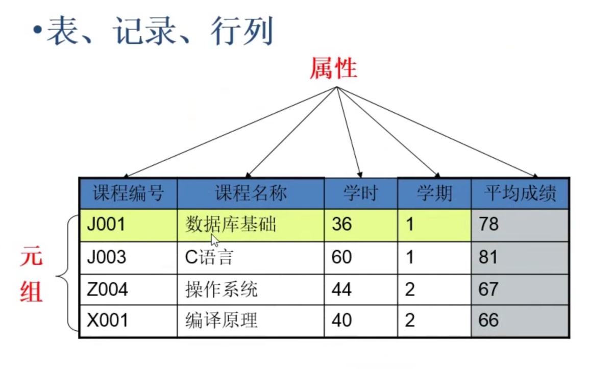

- 数据库的基本概念
- 实体与实体之间的关系
- 数据库设计的步骤
- 数据规范化
一、数据库的基本概念
- 关系：两个表的公共字段
- 行：也称记录，也称实体<——面向对象的角度
- 列：也称字段，也称属性<——面向对象的角度

- 对表结构而言，表分为行和列；
- 对表数据而言，表分为记录和字段；
- 就面向对象而言，一个记录就是一个实体；一个字段就是一个属性。
- 数据冗余：相同的数据存储在不同的地方。
- 冗余只能减少，不能杜绝。
- 减少冗余的方法：添加表，分割表。
- 分表后查询速度慢，只是记录显示下，允许冗余。
- 数据完整性：正确性+准确性=数据完整性
- 正确性：数据类型正确
- 准确性：数据范围准确
- 失去数据的实体完整性。
- 失去数据的域完整性。
二、实体与实体之间的关系
- 一对多 1:N
- 主键和非主键建立关系。
- 最常见的关系。
- 主表中的一条记录对应从表中的多条记录。
- 一对一 1:1
- 主键和主键建立关系。
- 查询常用信息，提高效率。
- 数据库的优化上使用，对表的垂直分割！！！
- 多对多 N:M
- 主表中的一条记录对应从表中的多条记录，从表的一条记录对应主表中的多条记录。
- 需要建立关系表。
1、一对多 1:N
一对多的关系
一对多：主键和非主键建立关系
常见的一对多的关系：
- 班级表和学生表
- 班主任表和学生表
2、一对多 1:1
一对一的关系
一对一两个表完全可以用一个表实现，为什么还要分成两个表？
- 在字段数量很多的情况下，数据量也就很大，每次查询都需要检索大量数据，这样效率低下
- 我们可以将所有字段分为两部分，“常用字段”和“不常用字段”，这样对大部分查询者来说效率跳高了。（表的垂直分割）
3、多对多 N:M
多对多的关系
如何实现多对多？
- 建立第三张表建立关系
- 科目表和学生表
- 商品表和订单表
- 游戏目录表和玩家表
三、数据库的设计步骤
1、软件项目开发周期
2、数据库设计具体步骤 ( 建模的过程 )
- 收集信息：与该系统有关人员进行交流、座谈、充分理解数据库需要完成的任务。
- 标识对象（实体-Entity）标识数据库要管理的关键对象或实体。 -----一个对象一个表，（表名）
- 标识每个实体的不同属性（Attribute） -----一个属性对应一个字段，（表中的列名）
- 标识对象之间的关系（Relationship） -----建立关系
- 将模型转成数据库
- 规范化
3、绘制E-R图
- E-R(Entity-Relationship)实体关系图
- 将E-R图转成表
- 实体转成表，属性转成字段
- 如果没有合适的字段做主键，给表添加一个自动增长列做主键。
E-R(Entity-Relationship)语法图

E-R(Entity-Relationship)关系图
建立关系，绘制E-R图
四、数据规范化
三范式进行数据规范化
范式由小到大约束，范式越高冗余越小，但表的个数也越多。查询越慢。
- 第一范式：确保每列原子性
- 确保每个字段不可再发
- 是否用于统计，如果不做统计，可以不进行分割拆分。
- 第二范式：非键字段必须依赖于键字段
- 一个表只能描述一件事
- 第三范式：
- 在所有的非键字段中，不能有传递依赖
- 提高短时间内的查询速度----可以不满足第三范式。性能和规范化起冲突时，首选性能！
1、第一范式：确保原子性
第一范式：确保每个字段不可再分
第一范式：案例
注意：GO1期 课程：2018.08.12～2018.12.15 238教室
2、第二范式：非键字段必须依赖于键字段
第二范式：
第二范式：案例
3、第三范式：消除传递依赖
第三范式：
第三范式：案例
数据库设计的关键：
- 实体与实体的关系搞清楚
4、规范化表数据库设计案例
- 表满足第一范式
- 表描述一件事情